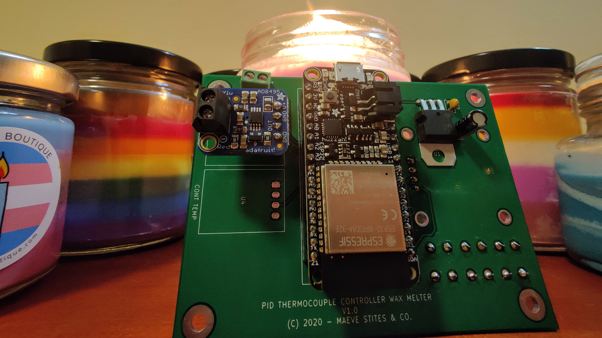
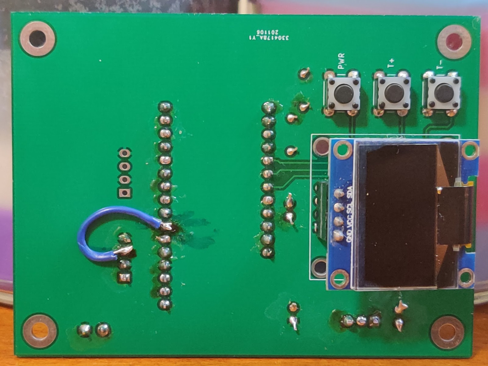
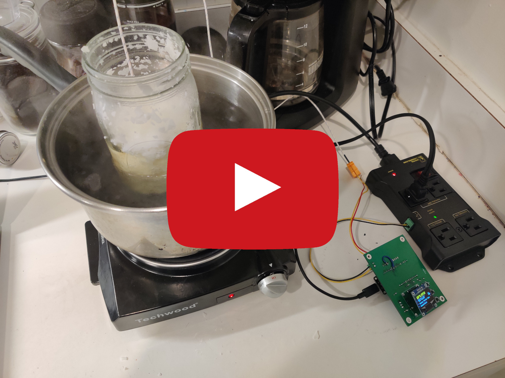
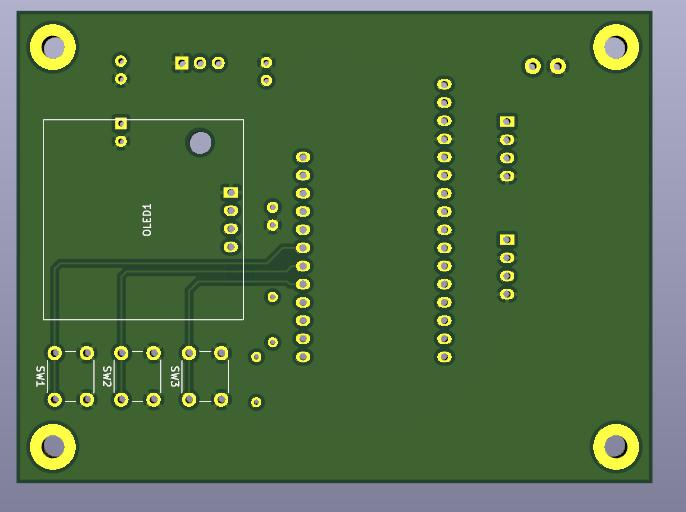
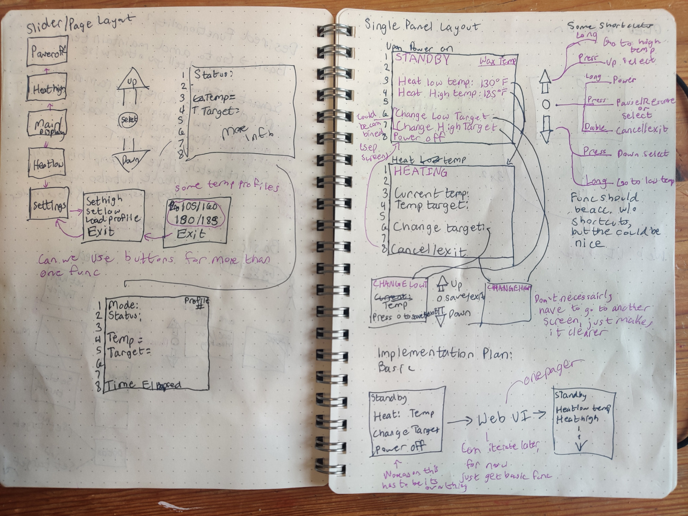

Wax Melter

Intro
In the fall of 2020, I took a class in microcontrollers. The main assignment was to design a microcontroller circuit for a project that sparked my interests. A passion of mine is candle making, so I chose to design and build a board that solved a real-world problem of mine - temperature control of liquid wax. For this project, I spec'd out and designed the electronics, used KiCAD to layout a printed circuit board and coded the application in C. I also developed a web interface so the board could be monitored remotely.
Results
For full code and schematics please see the waxMelter github. To see complete testing results, please see the full system test videos playlist.
Board

Front of the finalized board with most of the major components: microcontroller, one thermocouple amplifier with room for another, 3.3V linear regulator and associated filering, and screw terminal for relay control.
Back of the board with the OLED and button control UI. There is a wire for a connection modification with the thermocouple amplifier to a different analog read port.
Usage

Board controlling the hot plate via the power relay.
Board heating a jar of wax in a double broiler system.
Board Information
Parts List and Parts Decisions
Below is the parts list for making one board. I ordered more of certain parts (regulators, capacitors, resisters, sockets) with the plan to make more than one board. However, I ended up only making one board as my first design came out very well.
- Adafruit HUZZAH32 - $20.95 - integrated wifi module and common usage in IoT device spaces.
- Thermocouple Amplifier AD8495 - $11.95 - this is basically a chip on a board, but having it in module form makes it much easier to implement. If my budget would have allowed it, I would have bought two of these so I could have measured two temperature points (eg the pot and in the wax).
- K Type Thermocouple - $5.75 - a very generic and cheap K type thermocouple. It works fine, but next time I would buy a probe.
- Hot Plate - $22 - The most basic hot plate I could find. When you plug it in, it turns on. When you unplug it, it turns off. Perfect for my board to control.
- Outlet Power Relay - $27 - picked this up as it is safer than using a relay to control 120V myself, which understandably my Professor would not let me do for this course.
- SPI OLED 128x64 - $7 - Simple SPI controlled OLED module. I picked one with the top two lines yellow to use as status indicators.
Digikey Parts
- LD1117V33 3.3V 800mA Linear Voltage Regulator - $0.55 - stepping down from 5V to 3.3V for the OLED and the thermocouple modules.
- 3x 0.1uF Ceramic Capacitor - $0.23 each - power filtering.
- 2x 10uF Electrolytic Capacitor - $0.27 each - power filtering.
- 2x 4.7K Resistor 1/8W - $0.10 each - for SPI.
- 2 Pin Screw Terminal - $1.26 each - for connecting the thermocouple to the board.
- 16 pin socket - $1.02 - micro controller socket.
- 12 pin socket - $1.82 - micro controller socket.
- 2x 4 pin socket - $0.47 each - socket for the thermocouple amplifier and OLED. Long term, it would be best to solder both components for stability.
Total = $104.60 + shipping + pcb cost
My project cost total 147.60 with shipping and pcb costs. this included double the parts from digikey (for a planned second PCB that was not made).
All of the devices I chose support 3.3V logic. All power will be supplied by the USB adapter. This is not ideal, but this is the only realistic option on the HUZZAH32. The LD1117V33 will be used to power the OLED and the thermocouple modules.
Schematic
My schematic(s) for this project, click on the image for a full PDF download:

The key difference between these two schematics is in the analog inputs used for the thermocouple amplifier readings. In the first iteration, I used A1 and A5 on the ESP32, which are on ADC channel #2. In the second iteration, I used A2 and A4, which are on ADC channel #2. This change was due to a discovered conflict between WiFi and ADC #2.
I used a Linear Voltage Regular pulling power from 5V USB to supply 3.3V to all the modules. There is a on board 3.3V regulator on the HUZZAH32 board, which can be used to supply off board components. However, the other modules I have plus the ESP32 would have been up against the limit of the HUZZAH32's on board regulator's capacity and I did not want to interfere with the chip's power supply. There are a number of capacitors throughout my schematic, 0.1uF and 10uF, for filtering and power stabilization.
PCB Layout
With the PCB layout, I had some key design requirements in mind:
- Two layer board
- Stay below 100x100mm
- Position all off PCB wires in a convenient location
One and two reduce cost and simplify my board. I also wanted my board to be small, so it would be convenient to package in the future. For the third consideration, there are a lot of wires going off board: up to four wires for thermocouples, two wires for relay control, and a micro usb cable for power. I wanted to make sure these did not make the unit cumbersome to use.
With those considerations in mind, I created the following PCB:
Front of the PCB with all of the core components mounting to this side: microcontroller, thermocouple amplifiers, power components, and screw terminal for relay control.
Back of the PCB with only the OLED and buttons mounting to it.

PCB Footprint
I put all of the components that had external wiring as far up and to the left as possible (on the front). This put them far away from the OLED, opposite the direction the user would be using the interface.
There is a power plane on the front of the PCB and a ground plane on the back. This made running traces much easier, and reduced the number of vias. The ground planes are also mostly uninterrupted.
One important note is that I did end up cutting a trace and moving a connection. This is to match the revised location as seen in the suggested schematic layout earlier on the page for SENSOR_0:
Jumped connection from thermocouple output to A2 instead of A1. Mark on PCB is from sharpie not from soldering.
Software
Complete source code, including code used during key testing and development stages, can be seen on the project github.
OLED UI
The first user interface I designed was an OLED user interface for the user to use while next to the candle maker. Below is information about my implementation and process.
Final OLED interface - Video Demonstration
Top and bottom buttons are up and down. Middle button is select.
Ideation & Layout
Photo of my design notebook with design requirements and initial designs.
Photo of my design notebook with two designs: a multi page slider layout and a single page layout.
Before starting on any software implementation for my OLED user interface, I went through a design ideation process with pen and paper to create an intuitive user design. I first (first photo, first page) made a list of requirements. This included controls and indicators I needed to have on the display. I also drew the physical environment which my user would be using the board to set my mind in the correct space.
Next (first photo, second page), I explored desired functionality and some initial possible interface options. I thought about how the user might see and interact with information.
Finally (last two pages), I explored two possible designs for the OLED. The first design was a slider layout where the up and down buttons changed the screen and the middle button selected the option on the screen. The second design was a single panel layout. In this version, the up and down buttons selected the line and the middle button was an enter/select button.
I decided to move forward with the single panel layout as it made better use of the space on the OLED screen and was less complicated to use. It consisted of only two pages for the user to learn. This mindset of simplicity is also why I chose to not have any sort of heating profiles in the end. Based on experimentation, I found this cluttered this display. I found my final iteration of just one target temperature option on the display made the device much more usable.
Web UI
Final web interface - Video Demonstration
Process
Unlike when working on the OLED interface, I was less focused with reaching a specific interface design. I was more focused on reaching basic functionality. Prior to this project, I had never ran a web server on a device like this.
The first part of my process was identifying my key challenges. I made four key steps for myself:
- Connecting to WiFi
- Hosting a webpage
- Sending data to webpage that changed (not "static")
- Recieve data from webpage from user
I put static in quotes because I am not using it in the traditional static versus dynamic web page way. I mean it simply in the way that data can be updated after the device is powered on.
I found it quite easy to connect to WiFi. The microcontroller I picked, thanks to its great IoT support has a wonderful WiFi implementation from the espressif package listed in the github. Connecting to WiFi is as simple as: include the library, set the mode you want to connect (basically, are you a client, a router, or both?), and run the begin statement with connection info:
#include <WiFi.h>
WiFi.mode(WIFI_STA);
WiFi.begin(ssid, password);
The next few steps were the harder ones. There are many packages for hosting a website on the ESP32, and most of them support sending and recieving data. However, many of them require continually relooping through the HTML code and printing it to the website. This has a high performance overhead, is difficult to functionize and organize, and makes it hard to perform other more complicated functions with the microcontroller - which I needed to do. In the end, I ended up using the ESPAsyncWebServer library.
This was by far the most complicated and most full featured library I tested. It is a bit tricky to get installed and going. However, once I got things running, it was great. There is lots of documentation and I was able to implement full featured web based interface and pass all kinds of data. More of my code for this package in the next section
Key Code Snippets
For my final implementation of the web UI, I used ESPAsyncWebServer for my interface and for handeling data. The built in espressif WiFi library was used for connectivity.
Before starting the web server, all constants and variables are defined. This includes the wifi connection info and the port of the server. But it also includes the page information:
- HTML with variables that will be connected to the code
- A C function to connect the HTML variables with the C variables, converting them to strings. More information below.
- Heat slider code
- A simple yes/no function to control the button slider based on the heating value
- Bare bones 404 page
Code to connect HTML with C variables:
String processor(const String& var){
//Serial.println(var);
if(var == "CURR_TEMP"){
// current temp status
return String(currentTemp);
}
else if(var == "TARG_TEMP"){
// target temp status
return String(targetTemp);
}
else if(var == "NEW_TARGET"){
// new target value in input field
return String(targetTemp);
}
else if(var == "HEAT_SLIDER"){
String buttons = "";
// replace button placeholder
buttons += (BUTTON HTML)
return buttons;
}
return String();
}
The var values are the variables coming from the page HTML. The return values are strings of values in the C environment on the HUZZAH32. The first two if statements are setting the values for the temperature status indicators: for current temperature and target temperature respectively. The third value is the new target field which is by default populated with the last target temp.
the last else if in this function is for the heater control slider. This replaces a place holder in the HTML code with a live button. I removed the button HTML code for simplicity in this example, but here it is isolated:
else if(var == "HEAT_SLIDER"){
String buttons = "";
buttons +=
"<h3>Heating:</h3>
<label class="switch">
<input type="checkbox"
onchange="toggleCheckbox(this)"
id="2" " + outputState() + ">
<span class="slider"></span></label>";
return buttons;
}
This code is a modified version of Rui Santos's work, who written many guides on the ESP32. This snippet creates an HTML button element. The most important items here for later for our are the sections after "onchange". The toggleCheckbox references a javascript portion embedded in the original code which sends a signal that something has been updated and changes a state. This is important because otherwise there is no way of knowing an event, or what event occured.
The outputState runs a C function to match the button with the local variable:
String outputState(){
if(heating){
return "checked";
}
else {
return "";
}
}
The final key snippet of code I am going to put is the server initializing function which contains the monitoring code for updates, as mentioned earlier. Here is the monitoring code, once again huge thanks to Rui Santos:
server.on("/update", HTTP_GET, [] (AsyncWebServerRequest *request) {
if (request->hasParam(PARAM_INPUT_1)) {
// if target temp change
targetTemp = (request->getParam(PARAM_INPUT_1)->value()).toInt();
}
else if (request->hasParam(PARAM_INPUT_2)) {
// if heating status change
int input = (request->getParam(PARAM_INPUT_2)->value()).toInt();
if (input == 1){
heating = true;
}
else {
heating = false;
}
}
});
}
When there is an update signal sent by one of the two inputs, this part of the code will be ran (hence the server.on ... "/update"). The first if statement checks PARAM_INPUT_1 which is a pointer to the target temperature input. Thus if the update contains that param, it is a temperature input and that value is updated.
Alternatively, if the value contains PARAM_INPUT_2, it corresponds to a state change in heating. PARAM_INPUT_2 is a pointer to the state value of the button. So when that value changes on an update, the heating value is changed as well.